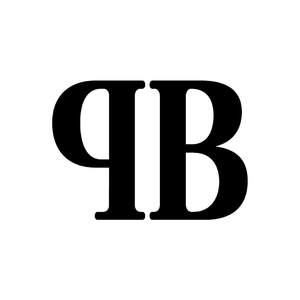

Trade Mark Journal No.2025/010 7 March 2025
UK00004162480 19 February 2025 (9,18,20,25,35)
Mark 1

Mark 2
- Class 9
- Eyewear; Protective eyewear; Safety glasses for protecting the eyes; Corrective eyewear; Frames for eyeglasses; Frames for sunglasses; Fashion sunglasses; Eyewear cases; Cases for eyewear; Straps for sunglasses; Eyeglass cords; Eyeglass chains; Sunglass cords; Cords for sunglasses; Chains for sunglasses.
- Class 18
- Travel bags; Backpacks [rucksacks]; Shoulder bags; Sports bags; Bags for sports; Wallets; Umbrellas; Holders in the nature of wallets for keys; Document holders [carrying cases]; Cosmetic bags; Coin purses; Dog collars; Dog clothing; Dog shoes; Cross-body bags; Duffle bags; Messenger bags; Pouches; Barrel bags; Sling bags; Bucket bags.
- Class 20
- Pillows; Cushions; Chair cushions; Seat cushions.
- Class 25
- Men’s pocket squares; Men’s belts [clothing]; Men’s leather belts [clothing]; Men’s athletic clothing; Men’s bandanas; Men’s bath robes; Men’s beachwear; Men’s blazers; Men’s bomber jackets; Men’s boxer shorts; Men’s bottoms [clothing]; Men’s caps; Men’s hats; Men’s beanie hats; Men’s cardigans; Men’s scarves; Men’s casual jackets; Men’s casualwear; Men’s casual shirts; Men’s coats; Men’s cargo pants; Men’s casual clothing; Men’s sports clothing; Men’s sportswear; Men’s clothing made of imitation leather; Men’s clothing made of leather; Men’s denims [clothing]; Men’s denim jackets; Men’s denim jeans; Men’s denim pants; Men’s dressing gowns; Men’s ear muffs [clothing]; Men’s formal wear; Men’s casual wear; Men’s gloves [clothing]; Men’s hooded sweatshirts; Men’s hooded pullovers; Men’s hooded tops; Men’s wind resistant jackets; Men’s rain jackets; Men’s weatherproof jackets; Men’s waterproof jackets; Men’s jackets [clothing]; Men’s sleeveless jackets; Men’s sports jackets; Men’s sleeveless pullovers; Men’s sleeveless jerseys; Men’s jerseys [clothing]; Men’s jumpers [sweaters]; Men’s jumpers [pullovers]; Men’s knitwear [clothing]; Men’s leather jackets; Men’s leather pants; Men’s leather headwear; Men’s long jackets; Men’s long sleeve pullovers; Men’s loungewear; Men’s underwear; Men’s nightwear; Men’s long-sleeved shirts; Men’s tank tops; Men’s mittens; Men’s ties [clothing]; Men’s outer clothing; Men’s outerwear; Men’s overcoats; Men’s trench coats; Men’s leather coats; Men’s lounge pants; Men’s jogging pants; Men’s parkas; Men’s polo sweaters; Men’s polo shirts; Men’s tops [clothing]; Men’s polo knit tops; Men’s padded jackets; Men’s pullovers; Men’s fleece pullovers; Men’s pyjamas; Men’s quilted jackets [clothing]; Men’s rainwear; Men’s raincoats; Men’s rainproof clothing; Men’s rainproof jackets; Men’s sandals; Men’s athletic footwear; Men’s athletic shoes; Men’s shoes; Men’s trainers [footwear]; Men’s slippers; Men’s underclothing; Men’s suits; Men’s sweatshirts; Men’s shorts; Men’s sweaters; Men’s swimwear; Men’s swimming trunks; Men’s beach clothing; Men’s sleeved jackets; Men’s sports shirts; Men’s sleep shirts; Men’s leather slippers; Men’s suede jackets; Men’s leather shoes; Men’s shirts; Men’s T-shirts; Men’s thermal clothing; Men’s thermal underwear; Men’s trousers; Men’s casual trousers; Men’s shorts [clothing]; Men’s trunks being clothing; Men’s turtleneck pullovers; Men’s turtleneck sweaters; Men’s polo neck jumpers; Men’s top coats; Men’s tracksuits; Men’s sweatsuits; Men’s tracksuit bottoms; Men’s tracksuit tops; Men’s shoes for leisurewear; Men’s hoodies; Men’s underpants; Men’s undershirts; Men’s vest tops; Men’s visors [headwear]; Men’s waistcoats; Men’s waterproof clothing; Men’s water-resistant clothing; Men’s weather resistant outer clothing; Men’s weatherproof clothing; Men’s wrist bands; Men’s winter coat.
- Class 35
- Retail services connected with the sale of clothing and clothing accessories; Online retail store services relating to clothing; Advertising services relating to clothing; Advertising via electronic media and specifically the internet.
Harry good